LINK FOR MUGEN - VERSION 0.95
~ THE SHOP ~
It's one of the most important part about Link. The Shop will allow you to waste your rupees hardly earned, in order to equip you for the next matchs. There are many things to say about this topic.
How to activate/deactivate the shop ?
-
In order to use the shop, it must be activated in the Customization's options.
-
The shop is available by default in the Arcade modes (Arcade and Team Arcade).
-
In the other modes, the shop is unavailable (because there's only one match in these modes).
Consequences of the shop's activation.
-
When the shop is activated :
-
Since the second match, if you have enough rupees, you can open the shop to equip yçou by buying objects.
-
Each bought object allows you to use one or several new moves. See the Objects and the Movelist sections for more details. The purchase of an object also allows you sometimes to buy more powerful objects.
-
-
When the shop isn't activated :
-
You can't open the shop
-
As the shop can never be open, you can't fill the bottles anew once they're empty.
-
You can't buy arrows and bombs.
-
The gained rupees are never used.
-
When is the shop openable ?
-
You can open the shop since you're in one of the Arcade modes (Arcade, Team Arcade and Team Coop).
-
You can only open the shop at the beginning of each battle, just before the first round starts.
-
You must have at least 50 rupees to access to the shop.
-
You can only open the shop from the second match.
-
So, the Shop isn't available in Training, Versus, Team Versus, and Watch modes.
-
In Team Arcade with a Team Turns, you can only open the shop if Link is the first to fight (so, it's you to well manage the order of the fighters before the beginning of the next match !).
-
In Team Simul, if there are two Link, only the first to open the shop will be able to buy objects for the current match. If you play in cooperation with your partner, look after having a good concord in order well balance your equipments. And if you play without taking care of your partner, be the quicker to react !
How to open the shop ?
-
First of all, and it's imperative, you should ABSOLUTELY NOT press on one of the game's buttons (
 ,
, ,
, ,
, ,
, ,
, )
during this phase, otherwise, the shop will disappear and the fight will
begin. So, you must let the intro poses normally take place.
)
during this phase, otherwise, the shop will disappear and the fight will
begin. So, you must let the intro poses normally take place. -
Note, in the same idea, that you can only press the directions keys and the
 button during this phase.
button during this phase. -
When the shop is openable, Tingle appears at the top of the screen, suspended to a balloon, at the very beginning of the fight, when Link arrives.
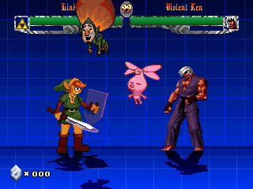
-
When Tingle stops moving down, you have a few less than two game seconds to press
. -
If you do it, Tingle's balloon will explod, and Tingle will fall on the ground, and run run away.
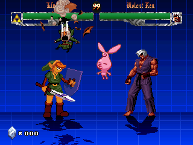
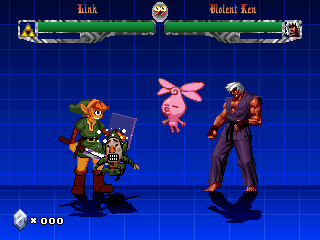
-
A Game Boy Advance (representing the shop) will then appear in the middle of the screen, and will turn on.
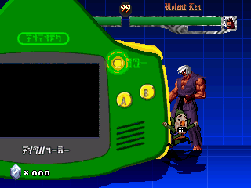
-
The firs object appears : you're in the shop !
-
If you don't press
(or
if you press it too late), Tingle goes away in the air, and the fight
begins.
How to use the shop ?
-
Once you've open the shop, that is, once the first object is displayed, you can make scroll as you want the 25 objects it contains. For this, simply use the and keys.
-
You can scroll the objects either by pressing the directions keys several times, or by holding them.
-
The objects you can buy are normally displayed. Contrariwise, those you can't buy are translucent.
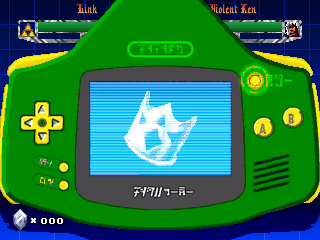
-
There are 4 reasons explaining why an object can't be bought :
-
Not having enough rupees.
-
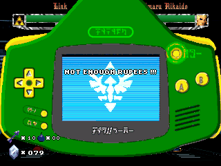
-
Not having reached the needed level to unlock the object.
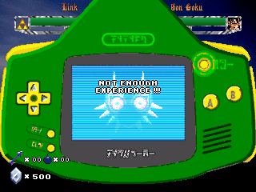
-
Not owning all the required objects for this objects.
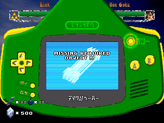
-
Already owning this objects.
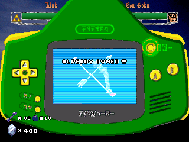
or even :
For the bottles, already own the 4 ones that can be bought, or for the bombs and the arrows : already have a maximal stock (10) of these items.
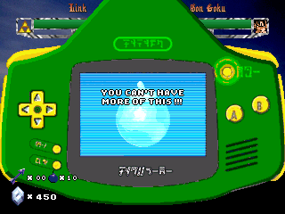
For the bottles' contents, already have all the bottles filled.
-
If an object can't be bought, the main reason (but not necessarily the only one) for which you can't buy it is displayed (cf. previous screenshots).
-
For each object, the number of required rupees and the required experience level is displayed at the bottom, on either side of the object.
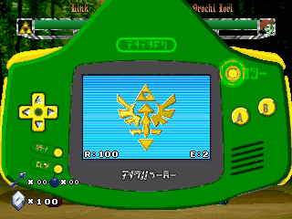
R: Displays the number of required rupees.
E: Displays the required experience level.
-
When you want to buy an object, simply press
 or
or
 . Then,
you're debited of the object's cost, and you'll be able, as soon as the
fight will begin, to use the abilities related to this object. Once bought,
the object becomes translucent (except for the bottles and their contents,
if you still can buy some of them).
. Then,
you're debited of the object's cost, and you'll be able, as soon as the
fight will begin, to use the abilities related to this object. Once bought,
the object becomes translucent (except for the bottles and their contents,
if you still can buy some of them). -
You can buy as much objects as you want (as long as your cash and your level allow it) in the same session.
-
It's not possible to resell a bought object.
-
When you have finished with the shop, you can press
:
the Game Boy Advance will then turn off and will go out of the screen.
When it has disappeared, the fight can begin.
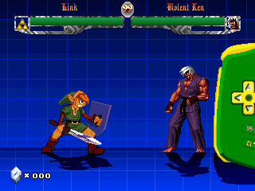
-
You can also press one of the six hit buttons : the game immediately turns into fight mode, and the Game Boy Advance disappears.
-
Likewise, if after having bought one (or several) object(s), you have less than 50 rupees, then the Game Boy Advance turns off and automatically goes away from the screen (like if you have pressed
).
This simply because with less than 50 rupees, you can't buy any object. -
But be careful, nevertheless, the opposite isn't true : even if you can't buy anymore objects, if you still have 50 rupees or more, the shop won't automatically turn off (this will perhaps be implemented in a next version...)
~~~~~~~~~~~~~~~~~~